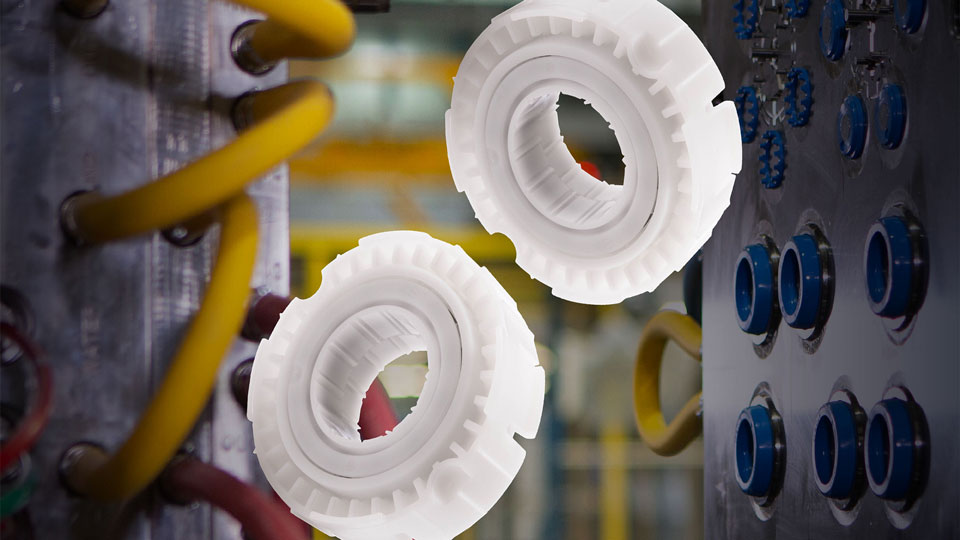

Home
Why Cimatron?
Time-to-Market Reduction & First-Time-Right
Overcoming Skilled Labor Shortage (Automation)
Handling Complex Geometry & Materials
Integrating Data Flow & Collaboration
Products & Technologies
Latest Release - What’s New
Mold Design
Die Design
Electrodes Design
NC Programming
Cimatron Viewer
Cimatron CAD
Cimatron CAD-AI
Cimatron DieQuote
Resource Center
Brochures
Case Studies
Videos
Video Testimonials
Tutorials
News and Events
News
Events
Webinars
Support & Contact
Technical Support
Contact Form
Request a Trial/Demo
Find a Reseller
Newsletter Sign-up
English
Deutsch
Español
Français
Italiano
Nederlands
Português
Türkçe
עִבְרִית
日本語
한국어
简体中文
English
Deutsch
Español
Français
Italiano
Nederlands
Português
Türkçe
עִבְרִית
日本語
한국어
简体中文
Home
> Resource Center > Customer Stories
Customer stories and case studies involving our solutions.
Customer Stories
ComplexaHPE - Designing with confidence
Stevenson High School - Molding the future of manufacturing
Automation makes 24/7 production possible for a single-shift operation, even for tool and moldmaking
Everstampi simplifies the design and production of complex molds with Cimatron
Innovative Die Solutions: Classic Tool & Cimatron
Integrated CAD/CAM Streamlines Electrode Manufacture, Improves Quality
Clips & Clamps Industries
TK Mold - CAD/CAM Software Reduces Delivery Times by 70% With a Six-Month ROI
2elle-engineering SRL

BNL Bearings
ALPLA - Stable production processes thanks to quality measurements on the machine
Officine Drag - Creative Craftsmanship
Eurominuterie SRL Creates Fashion Details with Passion
Allegiance Mold Delivers High-Quality Injection Molds Twice as Fast with Cimatron Software
Liberty Molds Eliminates Errors and Reduces Design Time by 50% with Cimatron Software
Ju Teng Shifts Design and Production to Cimatron
B&J Specialty Increases Production Rate by 30% with Metal 3D-Printed Conformally-Cooled Injection Mold
Bastech Uses 3D-Printed Conformal Cooling Inserts to Reduce Costs and Time
VMR Achieves Fast and Efficient Prototyping with Cimatron
Pakulla Builds Greater Productivity in Mold Design and manufacturing with Cimatron CAD/CAM Software
HARTING Improves Tool Quality, Reduces Scrap, and Delivers Molds Faster with Cimatron
Kern Microtechnik Enhances Micro-Milling Processes with Cimatron CAD/CAM Software
Ernst Keller Delivers More Products, Faster with Cimatron Mold and Tool design software
Impres Engineering Accelerates Part Production Time with Cimatron
J. Englander Ltd. Accelerates Die Design and Production With Cimatron CAD/CAM software
CRP Delivers Faster Product Delivery, Increased Quality With Cimatron 4- and 5-axis Machining
The Advanced Analysis Capabilities of Cimatron Allow Jamesway to Take on More Complex Jobs
LS Mold Reduces Mold Design and Production Times with Cimatron CAD/CAM Software
Fehrman Tool & Die and Cimatron CAD/CAM Software Deliver Results for Specialist Provider
Grosso Reduces Shoe Production time by 90% with Cimatron CAD/CAM software
Synergy MouldWorks Saves Up to 20% on Mold Delivery Time with Cimatron Software
Oticon Builds Sigificant Productivity Gains with Cimatron Software
H&D Precision Decreases Product Time-To-Market with the help of Cimatron CAD/CAM Software
Ghilardi Adopts Cimatron CAD/CAM Software for Improved Productivity
Modelleria CPC Adopts Cimatron CAD/CAM Software to Deliver Parts Every time, On-time
Trami Delivers Greater Efficiencies in Die Design and Production with Cimatron CAD/CAM Software
Rifton Takes Production of Adaptive and Rehabilitation Products to New Heights with Cimatron CAD/CAM Software
Automated design saves time across the board for BVA with Cimatron CAD/CAM Software
C & C Design Takes on the Tough Mold & Die Design Projects with Cimatron
Korean Chamber of Commerce & Industry Selects Cimatron CAD/CAM software for Training Centers
Gira Delivers Error-Free Electrode Production with Cimatron CAD/CAM Software
DLS Plastics Streamlines Injection Mold Design and Production with Cimatron CAD/CAM Software
Nortool Improves Productivity in Die Design and Production with Cimatron CAD/CAM Software
CImatron Delivers Significant Improvements in Design and Production Times
Vaupell’s Midwest Tooling Shop Builds Molds to Meet ISO Standards with Cimatron
KSB Group Reduces Mold Design and Production Cycle Times by 40% with Cimatron CAD/CAM Software
Rezmin Tool & Die Turns to Automation to Wrangle Work Back from Overseas Competition
Moules Industriels
Solo Tool & Mold Improves Productivity
RTM Changes the Way It Produces Parts with Cimatron CAD/CAM software
Cimatron CAD/CAM Software delivers Entire Toolsets for TNT EDM's Shop Floor Design and Production
Custom Motorcycle Manufacturer Changes production Processes and Customer Communication with Cimatron CAD/CAM Software
EIMO Incorporates Cimatron CAD/CAM Software to Build Lean manufacturing Practises
Giebeler Formenbau Builds Efficiencies in Design and Production of Masssive Tools with Cimatron
Omron Develops Micro-Milling Techniques with Cimatron CAD/CAM software